Graphical User Interface (GUI): Overview
In this chapter
This chapter provides general information about using the Graphical User Interface (GUI). Specific indications related to a given algorithm (X-13-ARIMA, Tramo-Seats, Benchmarking…) are displayed in the relevant chapters, listed here.
Contents:
- Available algorithms
- Installation and launch
- Importing data
- General window and menu structure
Additional chapters related to GUI features, provide information on:
- Data visualization and generic time series tools
- Specific Seasonal Adjustement and Modelling features
- Output: series, parameters and diagnostics
Available algorithms
The Graphical User Interface in the 2.x family gives access to:
Seasonal adjustment (SA) algorithms
- X-13-ARIMA
- Tramo-Seats
- Direct-indirect SA comparisons
Outlier detection (TERROR)
Benchmarking
The Graphical User Interface in the 3.x family gives access in addition to extended SA algorithms for high-frequency data (HF).
Available Time Series tools
The Graphical User Interface in the 2.x and 3.x family give access to generic time series tools:
- Graphics
- time domain
- spectral analysis
- Tests
- seasonality tests
- autocorrelation, normality, randomness tests
Installation Procedure
The installation procedure is detailed here in the introductory chapter of this book. Should you need more configuration details you will find specific Sheets in the JD-Tutorials GitHub repository
Launching JDemetra+
To open an application, double click on nbdemetra.exe or nbdemetra64.exe depending on the system version (nbdemetra.exe for the 32-bit system version and nbdemetra64.exe for the 64-bit system version).
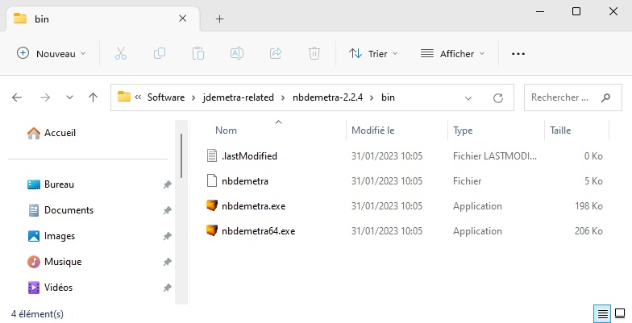
If the launching of JDemetra+ fails, you can try the following operations:
- Check if Java SE Runtime Environment (JRE) is properly installed by typing in the following command in a terminal:
java --versionCheck the logs in your home directory:
%appdata%/.nbdemetra/dev/var/log/ for Windows;
~/.nbdemetra/dev/var/log/` for Linux and Solaris;
~/Library/Application Support/.nbdemetra/dev/var/log/ for Mac OS X.
In order to remove a previously installed JDemetra+ version, the user should delete an appropriate JDemetra+ folder.
Starting Window
On the image below click on the area that interests you:
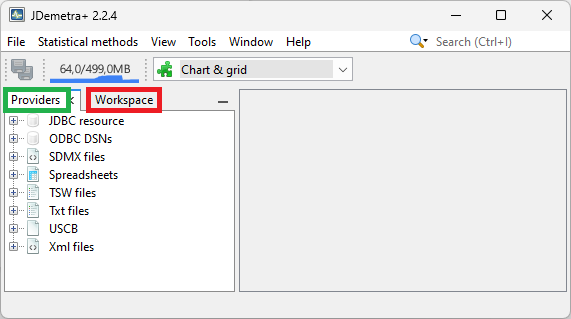
JDemetra+ default window
By default, on the left hand side of the window two panels are visible:
- The Workspace panel stores the results generated by the software as well as settings used to create them;
- The Providers panel organises the imported raw data within each data provider;
The other key parts of the user interface are:
- The application menu.
- A central empty zone for presenting the actual analyses further called the Results panel.
Providers window
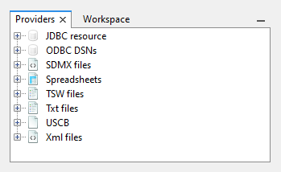
By default, JDemetra+ supports the following data sources:
- JDBC;
- ODBC;
- SDMX;
- Excel spreadsheets;
- TSW (input files for the Tramo-Seats-Windows application by the Bank of Spain);
.txt;- USCB (input files for the X-13-ARIMA-Seats application by the U.S. Census Bureau);
.xml.
All standard databases (Oracle, SQLServer, DB2, MySQL) are supported by JDemetra+ via JDBC, which is a generic interface to many relational databases. Other providers can be added by users by creating plugins (see Plugins section in the Tools menu).
Import data
To import data from a given data source:
- click on this data source in the Providers window shown below
- choose Open option and specify the import details, such as a path to a data file.
These details vary according to data providers.

The example below show how to import the data from an Excel file.
From the Providers window right-click on the Spreadsheets branch and choose Open option.
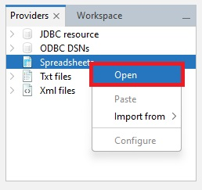The Open data source window contains the following options:
Spreadsheet file – a path to access the Excel file.
Data format (or Observartion format in v3) – the data format used to read dates and values. It includes three fields: locale (country), date pattern (data format, e.g. yyyy-mm-dd), number pattern (a metaformat of numeric value, e.g. 0.## represents two digit number).
Frequency – time series frequency. This can be undefined, yearly, half-yearly, four-monthly, quarterly, bi-monthly, or monthly. When the frequency is set to undefined, JDemetra+ determines the time series frequency by analysing the sequence of dates in the file.
Aggregation type – the type of aggregation (over time for each time series in the dataset) for the imported time series. This can be None, Sum, Average, First, Last, Min or Max. The aggregation can be performed only if the frequency parameter is specified. For example, when frequency is set to Quarterly and aggregation type is set to Average, a monthly time series is transformed to quarterly one with values that are equal to the one third of the sum of the monthly values that belong to the corresponding calendar quarter.
Clean missing – erases missing values at the start of the series.
Next, in the Source section click the grey “…” button to open the file.
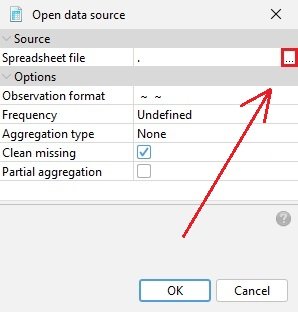Choose a file and click OK.
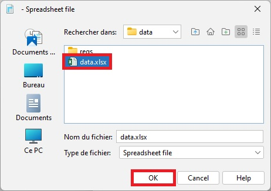The user may specify Data format, Frequency and Aggregation type, however this step is not compulsory. When these options are specified JDemetra+ is able to convert the time series frequency. Otherwise, the functionality that enables the time series frequency to be converted will not be available.
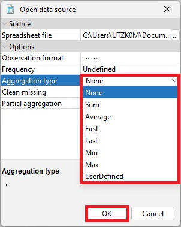The data are organized in a tree structure.
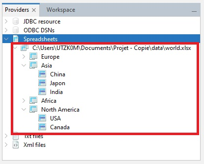
Once imported, your s is visible as a “node” structure

In v2, the formats .xls and .xlsx are accepted.
In v3, only the format .xlsx is accepted (.xls files are no longer supported).
- Dates in Excel date format, in the first column (or in the first row)
- Titles of the series in the corresponding cell of the first row (or in the first column)
- Top-left cell \(A1\) can include text or it can be left empty
- Empty cells are interpreted by JDemetra+ as missing values
- If empty cells are at the beginning of the series they can be ignored using the option clean-missing.
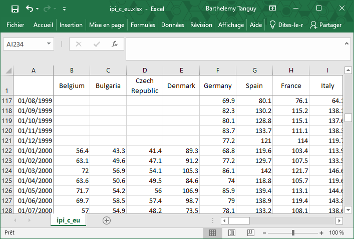
In Excel files, series are identified by their names (colnames) in the file.
The example below show how to import the data from an Excel file.
From the Providers window right-click on the Txt files branch and choose Open option.
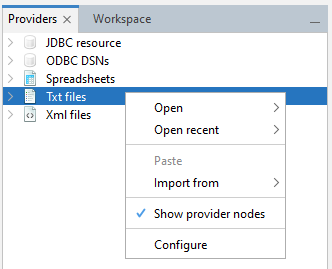The Open data source window contains the following options:
.txtfile – a path to access the file.Charset – the encoding used to encode the file
Lines to skip – the number of lines to skip before reading the data
Delimiter – the character used to separate fields in the file
Text qualifier – the characters used to retrieve text fileds
Has header – check tu use the first line as header
Data format (or Observartion format in v3) – the data format used to read dates and values. It includes three fields: locale (country), date pattern (data format, e.g. yyyy-mm-dd), number pattern (a metaformat of numeric value, e.g. 0.## represents two digit number).
Frequency – time series frequency. This can be undefined, yearly, half-yearly, four-monthly, quarterly, bi-monthly, or monthly. When the frequency is set to undefined, JDemetra+ determines the time series frequency by analysing the sequence of dates in the file.
Aggregation type – the type of aggregation (over time for each time series in the dataset) for the imported time series. This can be None, Sum, Average, First, Last, Min or Max. The aggregation can be performed only if the frequency parameter is specified. For example, when frequency is set to Quarterly and aggregation type is set to Average, a monthly time series is transformed to quarterly one with values that are equal to the one third of the sum of the monthly values that belong to the corresponding calendar quarter.
Clean missing – erases the missing values of the series.
Partial aggregation – Allow partial aggregation (only with average and sum aggregation).
Next, in the Source section click the grey “…” button to open the file.
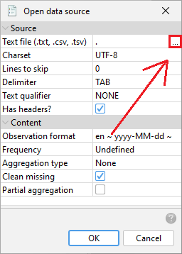Choose a file and click OK.

The data are organized in a tree structure.
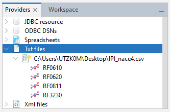
.txt or .csv file
- Dates in Excel date format, in the first column (or in the first row)
- Titles of the series in the corresponding cell of the first row (or in the first column)
- Top-left cell \(A1\) can include text or it can be left empty
- Empty cells are interpreted by JDemetra+ as missing values
- If empty cells are at the beginning of the series they can be ignored using the option clean-missing.
In text files, series are identified by their position in the file.
Wrangling data
Series uploaded to the Providers window can be
- Displayed,
- Modified
- Tested for seasonality / white noise
or used in any available algorithm (link to list)
- Modelled Modelling
- Seasonnally adjusted
- Benchmarked
Behaviour options
Restoring data sources
The data sources can be restored after re-starting the application so that there is no need to get them again. This functionality can be set in the Behaviour tab available at the Option item from the Tools menu.
Add Star
You can also favorite files to find them each time you open the software.
To favorite a file:
- right-click on the file
- click on Add star

A favorite file will have a little star on top right of the logo:
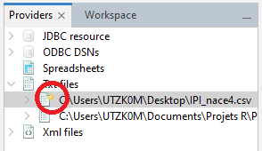
To remove a favorite:
- right-click on the file
- click on Remove star
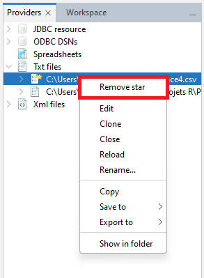
Workspace Structure
The workspace is the main data structure used by JDemetra+.
The workspace saved by JDemetra+ includes:
Main folder containing several folders that correspond to the different types of items created by the user and;
The
.xmlfile that enables the user to import the workspace to the application and to display its content.

The workspace can be shared with other users, which eases the burden of work with defining specifications, modelling and seasonal adjustment processes.
The main folder contains:
- a folder SAProcessing with all the result of the SA
- folders TramoSeatsSpec and/or X-13Spec with the custom specifications
- a folder Variables for external regressor and variables
- a folder Calendars with the calendars used to correct the trading days effect
- a folder Output contains all the generated output from the GUI
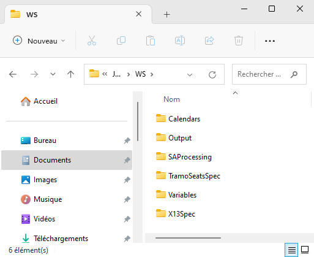
Workspace window
The workspace window displays the characteristics of a workspace but ALSO gives access to other peripheric routines, the results of which won’t be stored in a workspace (as data structure).
You can click on the image in the area that interests you:
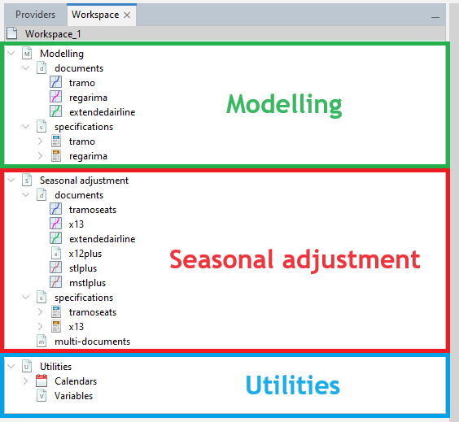
The Workspace window
You can find:
Modelling (contains the default and user-defined specifications for modelling; and the output from the modelling process)
Seasonal adjustment (contains the default and user-defined specifications for seasonal adjustment and the output from the seasonal adjustment process),
Utilities (calendars and user defined variables).
Results Panel
Results Panel of seasonal adjustment will be presented in another chapter
Top Bar Menu and options
You can click on the image in the area that interests you:

The Top bar menus
The majority of functionalities are available from the main application menu, which is situated at the very top of the main window. If the user moves the cursor to an entry in the main menu and clicks on the left mouse button, a drop-down menu will appear. Clicking on an entry in the drop-down menu selects the highlighted item.
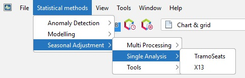
The functions available in the main application menu are:
- File
- Statistical methods
- View
- Tools
- Window
- Help
- RegARIMADoc
- X-13Doc
- TramoDoc
- TramoSeatsDoc
- SAProcessingDoc
File
The File menu is intended for working with workspaces and data sources. It offers the following functions:
New Workspace – creates a new workspace and displays it in the Workspace window with a default name (Workspace_#number);
Open Workspace – opens a dialog window, which enables the user to select and open an existing workspace;
Open Recent Workspace – presents a list of workspaces recently created by the user and enables the user to open one of them;
Save Workspace – saves the project file named by the system under the default name (Workspace_#number) and in a default location. The workspace can be re-opened at a later time;
Save Workspace As… – saves the current workspace under the name chosen by the user in the chosen location. The workspace can be re-opened at a later time;
Open Recent – presents a list of datasets recently used and enables the user to open one of them;
Exit – closes an application.

Statistical Methods
Here just a hint and link to relevant chapters
The Statistical methods menu includes functionalities for modelling, analysis and the seasonal adjustment of a time series. They are divided into three groups:
- Anomaly Detection – allows for a purely automatic identification of regression effects;

- Modelling – enables time series modelling using the Tramo and Reg-ARIMA models;

- Seasonal adjustment – intended for the seasonal adjustment of a time series with the Tramo-Seats and X-13ARIMA-Seats methods.
By default, the Seasonal adjustment tab has 3 sub-tabs:
- Multiprocessing,
- Single Analysis,
- and Tools.

In v2, the Tools sub-tabs contains 2 functionalities:
- Seasonality Tests
- Direct-Indirect Seasonal Adjustment

In v3, the Tools sub-tabs contains 2 functionalities:
- Seasonality Tests
- CanovaHansen
But no direct-indirect analysis.

Tools menu

The following functionalities are available from the Tools menu:
- Container – includes several tools for displaying data in a time domain;
- Spectral analysis – contains tools for the analysis of a time series in a frequency domain;
- Aggregation – enables the user to investigate a graph of the sum of multiple time series;
- Differencing – allows for the inspection of the first regular differences of the time series;
- Spreadsheet profiler – offers an Excel-type view of the
.xlsfile imported to JDemetra+. - Plugins – allows for the installation and activation of plugins, which extend JDemetra+ functionalities.
- Options – presents the default interface settings and allows for their modification.
Container
Container includes basic tools to display the data. The following items are available: Chart, Grid, Growth Chart and List.

detailed in data visualization part (link to set up)
Spectral analysis
The Spectral analysis section provides three spectral graphs that allows an in-depth analysis of a time series in the frequency domain. These graphs are the Auto-regressive Spectrum, the Periodogram and the Tukey Spectrum.
For more information the user may refer to the spectral analysis chapter and to the sprectral graphs section.

Aggregation
Aggregation calculates the sum of the selected series and provides basic information about the selected time series, including the start and end date, the number of observations and a sketch of the data graph.
link to data visu chap
Differencing
The Differencing window displays the first regular differences for the selected time series together with the corresponding periodogram and the PACF function.
link to data visu chap
Spreadsheet profiler
The Spreadsheet profiler offers an Excel-type view of the .xls file imported to JDemetra+. To use this functionality drag the file name from the Providers window and drop it to the empty Spreadsheet profiler window.

Plugins
Installation an functionalities of plugins are described in the related chapter.
View
The View menu contains functionalities that enable the user to modify how JDemetra+ is viewed. It offers the following items:
Split – the function is not operational in the current version of the software.
Toolbars – displays selected toolbars under the main menu. The File toolbar contains the Save all icon. The Performance toolbar includes two icons: one to show the performance of the application, the other to stop the application profiling and taking a snapshot. The Other toolbar determines the default behaviour of the program when the user double clicks on the data. It may be useful to plot the data, visualise it on a grid, or to perform any pre-specified action, e.g. execute a seasonal adjustment procedure.
Show Only Editor – displays only the Results panel and hides other windows (e.g. Workspace and Providers).
Full Screen – displays the current JDemetra+ view in full screen.

Window menu
The Window menu offers several functions that facilitate the analysis of data and enables the user to adjust the interface view to the user’s needs.

Preview Time Series – opens a window that plots any of the series the user selects from Providers.
Debug – opens a Preview Time Series window that enables a fast display of the graphs for time series from a large dataset. To display the graph click on the series in the Providers window.
Providers – opens (if closed) and activates the Providers window.
Variables – opens (if closed) and activates the Variable window.
Workspace – opens (if closed) and activates the Workspace window.
Output – a generic window to display outputs in the form of text; useful with certain plug-ins (e.g. tutorial descriptive statistics).
Editor – activates the editor panel (and update the main menu consequently).
Configure Window – enables the user to change the way that the window is displayed (maximise, float, float group, minimise, minimise group). This option is active when some window is displayed in the JD+ interface.
Properties – opens the Properties window and displays the properties of the marked item (e.g. time series, data source).
Reset Windows – restores the default JDemetra+ view.
Close Window – closes all windows that are open.
Close All Documents – closes all documents that are open.
Close Other Documents – closes all open documents except for the one that is active (which is the last activated one).
Document Groups – enables the user to create and manage document groups.
Documents – lists all active documents.
All TS&view
Search option
Options
The Options window includes five main panels:
- Demetra,
- General,
- Keymap,
- Appearance
- and Miscellaneous.
They are visible in the very top of the Options window.

Demetra panel
By default, the Demetra panel is shown. It is divided into seven tabs:
- Behaviour,
- Demetra UI,
- Statistics,
- Data transfer,
- Demetra Paths,
- ProcDocumentItems,
- and Interchange.

By default, the Demetra panel is shown. It is divided into three tabs::
- Common UI,
- Behaviour,
- and Demetra Paths.
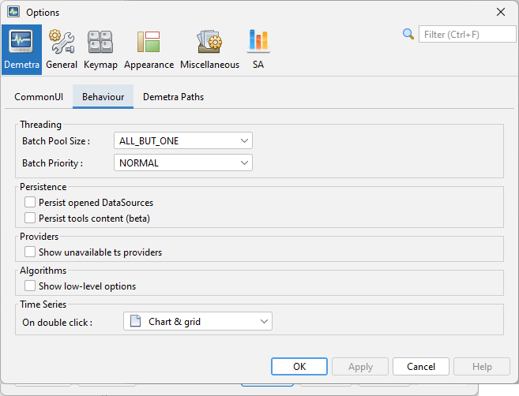
Behaviour tab

The tab Behaviour defines the default reaction of JDemetra+ to some of the actions performed by the user.
- Providers – an option to show only the data providers that are currently available.
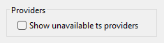
- Persistence – an option to restore the data sources after re-starting the application so that there is no need to fetch them again (Persist opened DataSources) and an option to restore all the content of the chart and grid tools (Persist tools content).
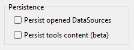
- Threading – defines how resources are allocated to the computation (Batch Pool Size controls the number of cores used in parallel computation and Batch Priority defines the priority of computation over other processes). Changing these values might improve computation speed but also reduce user interface responsiveness.
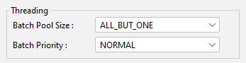
- Time Series – determines the default behaviour of the program when the user double clicks on the data. It may be useful to plot the data, visualise it on a grid, or to perform any pre-specified action, e.g. execute a seasonal adjustment procedure.
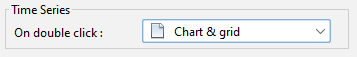
In v3, the option Show low-level options unable the user to access more settings in the specification.
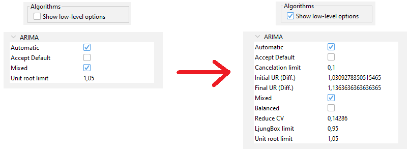
Demetra UI / CommonUI tab
In v2, this panel is called Demetra UI.

In v3, this panel is called CommonUI.
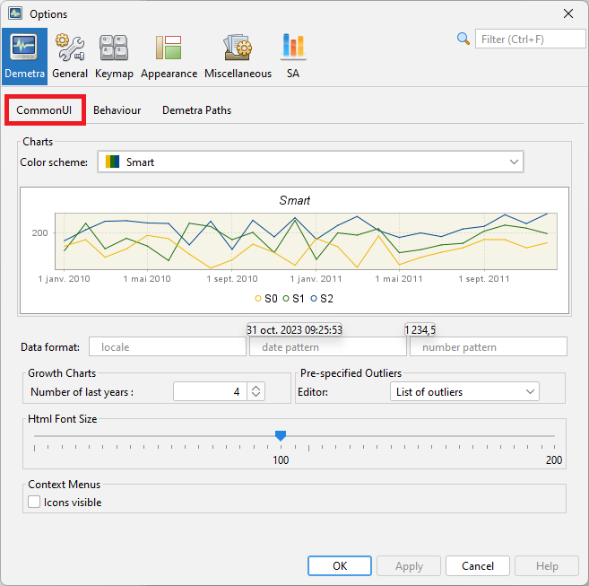
The Demetra UI tab enables the setting of:
- A default colour scheme for the graphs (Color scheme).
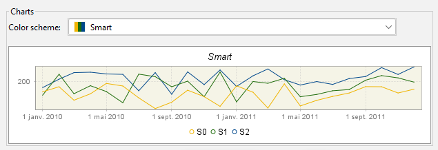
- The data format (uses MS Excel conventions). For example, ###,###.#### implies the numbers in the tables and the y-axis of the graphs will be rounded up to four decimals after the decimal point (Data format (or Observation format in v3)).
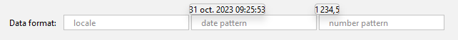
- The default number of last years of the time series displayed in charts representing growth rates (Growth rates).
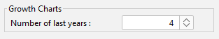
- The control of the view of the window for adding pre-specified outliers. (Pre-specified Outliers).

- The visibility of the icons in the context menus (Context Menus).
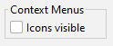
Demetra path tab
Demetra Paths allows the user to specify the relative location of the folders where the data can be found. In this way, the application can access data from different computers. Otherwise, the user would need to have access to the exact path where the data is located. To add a location, select the data provider, click the “+” button and specify the location.
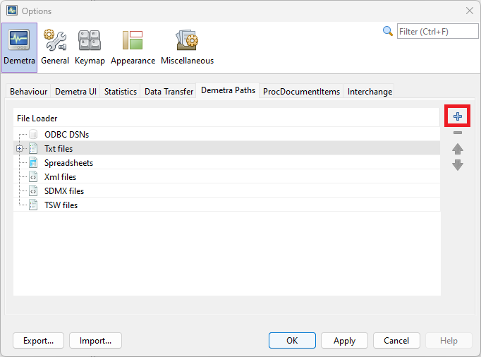
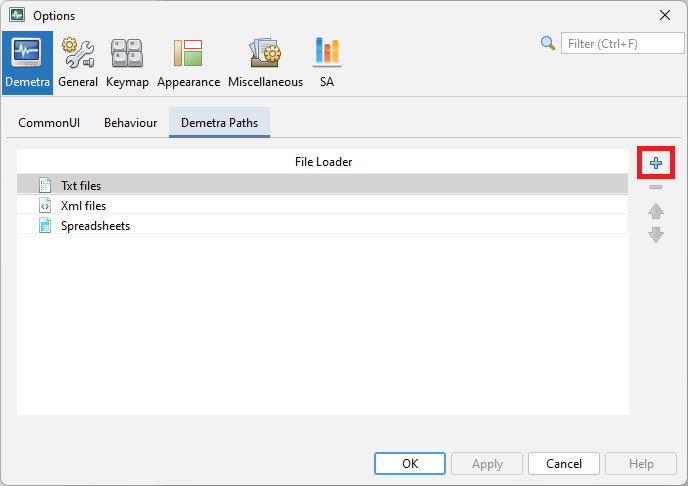
Statistics tab
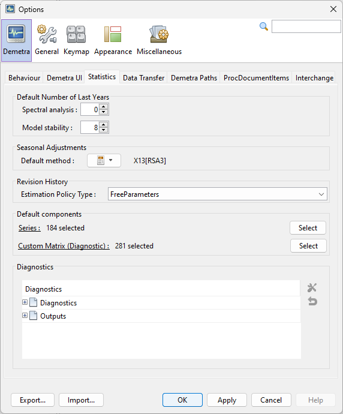

The Statistics tab includes options to control:
- The number of years used for spectral analysis and for model stability (Default Number of Last Years);

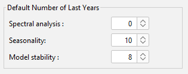
- The default pre-defined specification for seasonal adjustment (Seasonal Adjustment);

The type of the analysis of revision history (Revision History):
FreeParameters – the Reg-ARIMA model parameters and regression coefficients of the Reg-ARIMA model will be re-estimated each time the end point of the data is changed. This argument is ignored if no Reg-ARIMA model is fit to the series.
Complete – the whole Reg-ARIMA model together with regressors will be re-identified and re-estimated each time the end point of the data is changed. This argument is ignored if no Reg-ARIMA model is fitted to the series.
None – the ARIMA parameters and regression coefficients of the Reg-ARIMA model will be fixed throughout the analysis at the values estimated from the entire series (or model span).
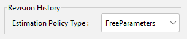
The settings for the quality measures and tests used in a diagnostic procedure:
- Default components – a list of series and diagnostics that are displayed in the SAProcessing \(\) Output window. The list of default items can be modified with the respective Select button (see figure below)
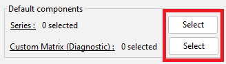
The Default components section on the Statistics tab - Diagnostics – a list of diagnostics tests, where the user can modify the default settings (see figure “The panel for modification of the settings for the tests in the Basic checks section” below).
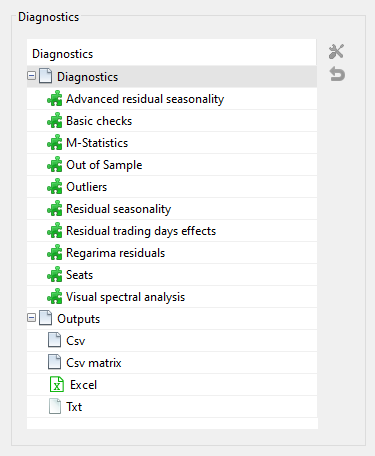
In v3, you can find this settings in the SA panel in the tabs TramoSeats and X-13:

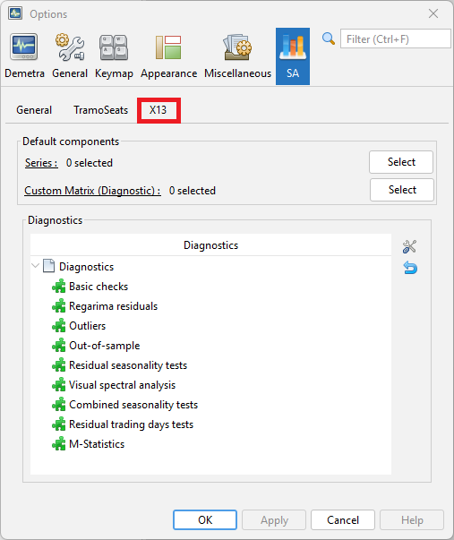
To modify the settings for a particular measure, double click on a selected row (select the test’s name from the list and click on the working tools button), introduce changes in the pop-up window and click the OK button.
To reset the default settings for a given test, select this test from the list and click on the backspace button situated below the working tools button. The description of the parameters for each quality measure and test used in a diagnostic procedure can be found in the output from modelling and the output from seasonal adjustment nodes.

The users can customize the diagnostics and they can specify the default settings for different outputs. Their preferences are saved between different sessions of JDemetra+. This new feature is accessible in the Statistics tab of the Options panel.

Data Transfer tab
The Data Transfer tab contains multiple options that define the behaviour of the drag and drop and copy-paste actions. To change the default settings, double click on the selected item. Once the modifications are introduced, confirm them with the OK button.

In v3, there is no equivalent of the Data Transfer tab.
ProcDocumentItems tab
ProcDocumentItems includes a list of all reports available for processed documents like seasonal adjustment.
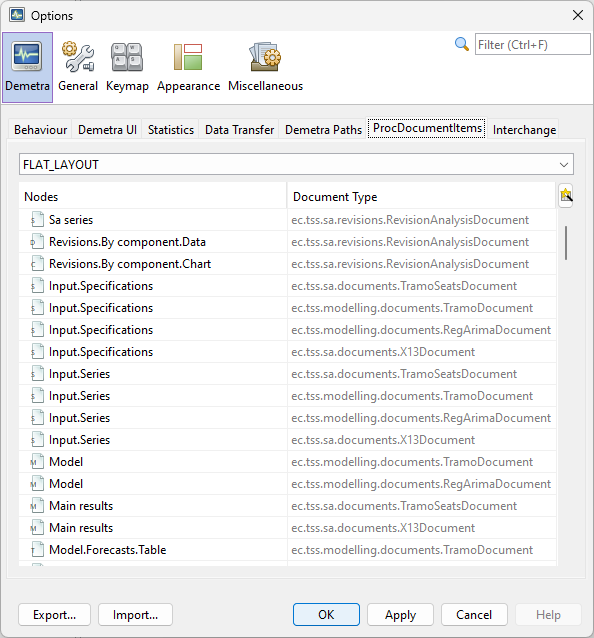
In v3, there is no equivalent of the ProcDocumentItems tab.
Interchange tab
The Interchange tab lists the protocols that can be used to export/import information like calendars, specifications, etc.. For the time being, the user cannot customize the way the standard exchanges are done. However, such features could be implemented in plug-ins.

In v3, there is no equivalent of the Interchange tab.
General panel
The next section, General, allows for the customisation of the proxy settings. A proxy is an intermediate server that allows an application to access the Internet. It is typically used inside a corporate network where Internet access is restricted. In JDemetra+, the proxy is used to get time series from remote servers like .Stat.

Keymap panel
Keymap provides a list of default key shortcuts to access some of the functionalities and it allows the user to edit them and to define additional shortcuts.

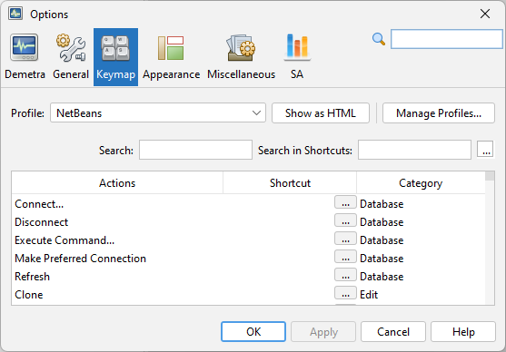
SA panel
The SA panel is only available in v3.
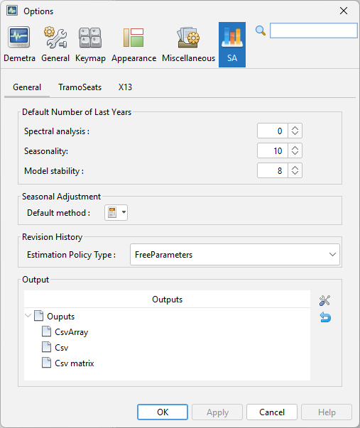
General tab
The General tab correspond to the Statistics tab from the Demetra panel in v2.
TramoSeats and X-13 tabs
The TramoSeats and X-13 tabs correspond to the settings for the quality measures and tests used in a diagnostic procedure in v2.
Other panels
The Appearance and Miscellaneous panels are tabs automatically provided by the Netbeans platform. They are not used by JDemetra+.